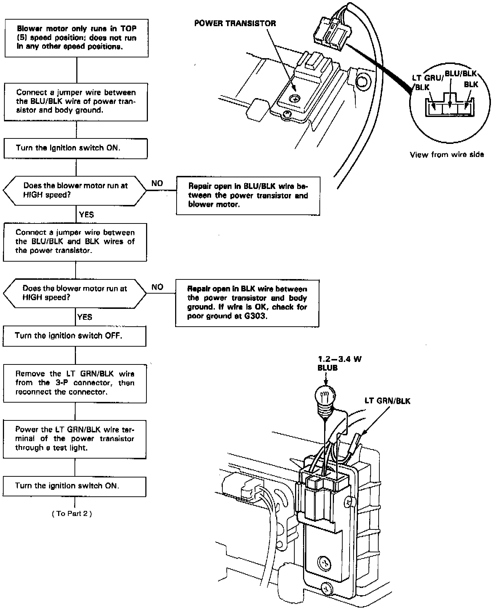
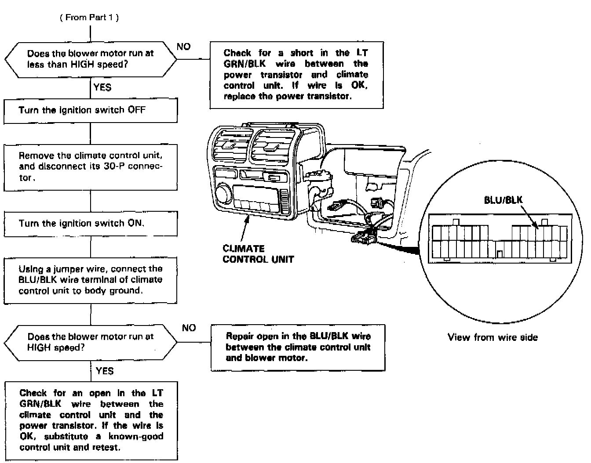

Operation CHARM
: Car repair manuals for everyone.
Home
>>
Acura
>>
1992
>>
Legend Coupe V6-3206cc 3.2L SOHC FI
>>
Repair and Diagnosis
>>
Heating and Air Conditioning
>>
Power Transistor HVAC
>>
Testing and Inspection
>>
Non-Trouble Code Procedures
>>
Diagnostic Flowcharts - Automatic Climate Control
>>
Power Transistor/Blower Motor Speed
Power Transistor/Blower Motor Speed
Blower Motor Speed, Part 1 Of 2:

Blower Motor Speed, Part 2 Of 2:
